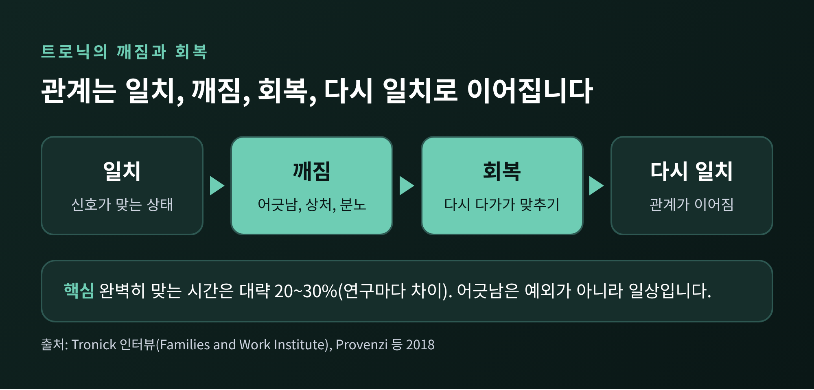
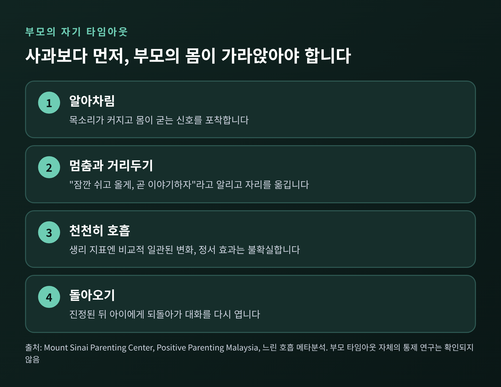
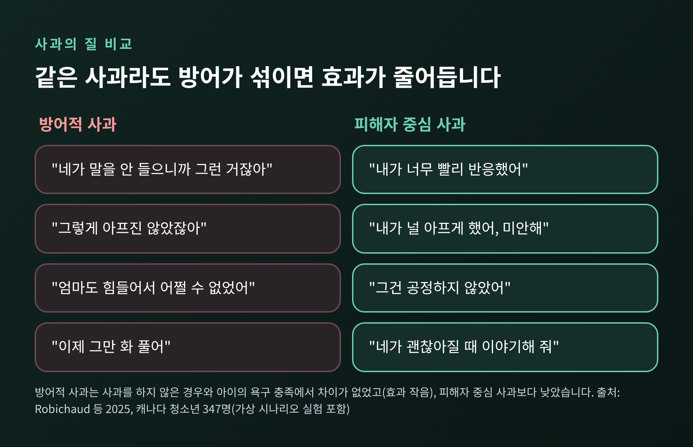
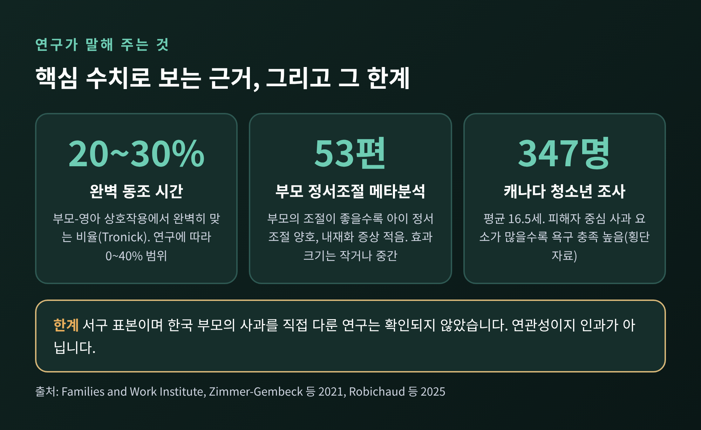
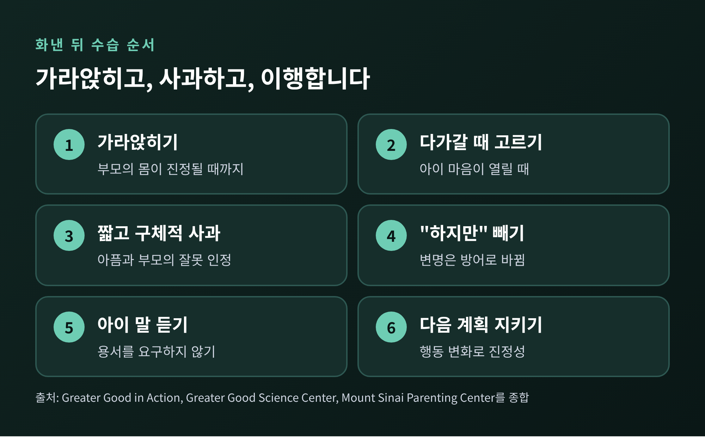
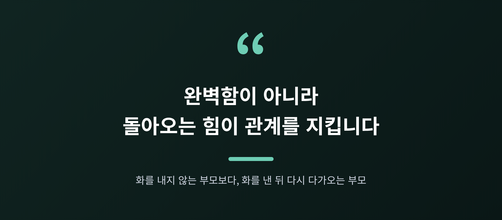

부모의 분노와 관계 회복, 아이에게 화를 낸 뒤 사과하고 수습하는 법

오늘은 아이에게 화를 낸 뒤 부모가 어떻게 수습하면 좋은지 이야기해 보려 합니다.
핵심만 먼저 말씀드리면, 화를 낸 사실보다 그 뒤에 이어지는 회복이 아이와의 관계에 더 오래 남습니다.
부모 자신의 흥분을 가라앉히는 일, 방어하지 않는 사과, 그리고 관계 회복(repair)이 이 글의 세 축입니다.
어긋남은 정상, 중요한 것은 다시 맞추는 일
발달심리학자 에드워드 트로닉(Edward Tronick)은 부모와 아기의 상호작용을 오래 관찰해 왔습니다.
그의 설명에 따르면 두 사람이 "완벽하게" 맞아떨어지는 시간은 대략 20~30%에 그칩니다.
나머지는 어긋나거나, 어긋났다가 다시 맞추는 과정입니다.
다른 논문은 조율되는 시간을 0~30~40% 범위로 보고하니, 정확한 비율은 연구마다 다릅니다.
다만 어긋남이 예외가 아니라 일상이라는 점은 같습니다.
트로닉은 이 어긋남이 부모를 "늘 완벽해야 한다는 부담"에서 풀어 준다고 말합니다.
관계는 일치, 깨짐, 회복, 다시 일치로 이어지는 순환이라는 것입니다.
일치 상태가 항상 유지되어야 건강한 관계가 아니라는 뜻이기도 합니다.

스틸페이스(still-face) 실험이 이 원리를 잘 보여 줍니다.
아기와 놀던 부모가 갑자기 무표정하게 반응을 멈추면, 생후 3개월 아기도 변화를 알아차립니다.
미소와 몸짓으로 반응을 끌어내려 하다가, 일부는 슬프고 무기력한 표정이 됩니다.
그런데 부모가 정상적인 반응을 되찾으면 아기는 빠르게 회복합니다.
여기서 한 가지 한계를 짚어 둡니다.
이 실험들은 생후 수개월 된 영아를 대상으로 한 것입니다.
화를 낸 학령기 자녀에게 그대로 적용된다고 검증된 것이 아니라, 원리를 넓혀 해석한 것입니다.
회복을 뒷받침하는 연구의 단서
그래도 단서는 있습니다.
3~4개월 영아와 어머니 46쌍을 관찰한 2015년 연구(Müller 등)에서, 스틸페이스 뒤 재회 구간에서 상호작용이 회복되는 정도는 아기의 코르티솔(스트레스 호르몬) 반응과 연관되어 있었습니다.
흥미로운 점은 어머니의 불안장애 진단 자체는 유의한 연관을 보이지 않았다는 것입니다.
저자들은 영아가 어머니의 진단명이 아니라 자신이 경험한 것에 반응한다고 해석했습니다.
표본이 작다는 점은 감안해야 합니다.
회복 능력이 보호적인 양육과 연결된다는 정리는 82편을 검토한 2018년 문헌고찰(Provenzi 등)에도 나옵니다.
같은 글은 무엇이 회복을 가능하게 하는지는 거의 연구되지 않았다고도 밝힙니다.
그러니 "회복하면 애착이 안정된다"고 단정하기는 어렵습니다.
확인된 것은 연관성입니다.
한국 영아 87쌍을 관찰한 2012년 연구(Jin 등)에서도 어머니의 민감성이 영아의 안정애착과 유의하게 연관되었습니다.
세 연구를 이어 보면, 아이의 신호를 읽고 다시 응답하는 부모의 반응이 안정감과 이어진다는 그림이 그려집니다.
먼저 부모의 각성을 낮추는 일
사과에 앞서 필요한 것이 있습니다.
부모가 먼저 가라앉는 것입니다.
부모의 정서조절을 다룬 메타분석(Zimmer-Gembeck 등, 2021)은 2000~2020년 발표된 53편을 종합했습니다.
정서조절을 잘하는 부모일수록 긍정적 양육 행동이 많았고, 자녀의 정서조절이 좋았으며 내재화 증상(불안·우울 등)이 적었습니다.
효과크기는 작거나 중간 정도였고, 외현화 문제(공격성 등)는 근거가 덜 분명했습니다.
한편 엄한 양육을 받은 아이의 몸은 다르게 움직였습니다.
위험군 모자 129쌍을 3세와 1년 뒤에 관찰한 연구(Penn State 보도, 2026)에서, 엄한 양육을 하는 어머니의 아이는 스트레스 뒤 기준선으로 돌아오는 데 더 오래 걸렸습니다.
다만 관찰 연구이고, 엄한 양육은 어머니의 자기보고였으며, 위험군 표본이라는 한계가 있습니다.
그렇다면 화가 올라올 때 무엇을 해야 할까요.
기관의 지침들은 대체로 비슷합니다.
마운트 시나이 부모센터는 차분히 대응하기 어려우면 잠깐 자리를 벗어나 숨을 고르라고 권합니다.
말레이시아 소아과학회 산하 부모교육 사이트는 자주 화가 나는 상황을 미리 파악하고, 호흡은 화가 쌓이기 전 예방용으로 쓰는 편이 낫다고 설명합니다.

호흡에 대해서는 과장하지 않으려 합니다.
느린 호흡 연구 31편을 종합한 분석에서 혈압과 심박 변동성 같은 생리 지표는 비교적 일관되게 변했습니다.
그러나 부정 정서 감소 효과는 통계적으로 확실하지 않았습니다(경계 수준, p=0.06~0.15).
"숨 쉬면 화가 사라진다"가 아니라 "몸의 흥분을 낮추는 데 도움이 될 수 있다" 정도로 받아들이시길 권합니다.
부모의 자기 타임아웃이 효과적인지 직접 검증한 통제 연구는 이번 조사에서 찾지 못했습니다.
기관 권고 수준이라는 점도 함께 기억해 주십시오.
자리를 비울 때는 아이에게 "엄마(아빠)가 너무 화가 나서 잠깐 쉬고 올게, 곧 이야기하자"라고 짧게 알리는 편이 좋겠습니다.
말없이 사라지면 아이에게는 또 다른 단절로 읽힐 수 있기 때문입니다.
좋은 사과와 방어하는 사과
몸이 가라앉았다면 이제 사과입니다.
캐나다 불어권 청소년 347명을 조사한 2025년 연구(Robichaud, Mageau 등)가 사과의 질을 구분했습니다.
평균 16.5세, 고등학생과 대학생이 대상입니다.
피해자 중심 사과는 이런 요소로 이루어집니다.
"미안해, 내가 널 아프게 했어", "그건 공정하지 않았어", "내가 너무 빨리 반응했어"처럼 아이의 아픔과 부모의 과잉반응을 인정하고, 용서를 압박 없이 청합니다.
반대로 방어적 사과는 설명하고 정당화하며 아이 탓을 하거나 아픔을 축소합니다.
결과는 이렇게 나타났습니다.
피해자 중심 요소가 많고 방어적 요소가 적을수록 청소년의 자율성·유능감·관계 욕구가 더 충족되었습니다.
가상 시나리오 실험에서 방어적 사과는 일반 사과나 피해자 중심 사과보다 욕구 충족이 낮았고, 사과를 아예 하지 않은 경우와는 차이가 없었습니다.
효과 크기는 작았습니다.

버클리 대학의 그레이터 굿 인 액션(GGIA)은 이 연구를 바탕으로 사과 요소 여덟 가지를 정리했습니다.
후회 표현, 책임 인정, 잘못 인정, 아이의 아픔 인정, 개선 약속, 보상, 설명, 압박 없는 용서 요청이며, 최소 세 가지를 담으라고 합니다.
피할 것은 변명, 정당화, 책임 전가, 축소, 용서 압박입니다.
권위가 무너질까 걱정하는 부모님도 계십니다.
같은 연구진의 별도 논문은 사과가 부모의 권위를 해친다는 유의한 근거를 찾지 못했다고 전해집니다.
다만 이 결과는 인터뷰 기사를 통해 확인한 2차 정보입니다.

화낸 뒤 수습하는 순서
연구를 일상에 옮기면 대략 이런 순서가 됩니다.
예를 들어 숙제를 미루는 아이에게 큰 소리로 다그친 저녁이라고 가정해 보겠습니다.
첫째, 가라앉힙니다. 부모의 몸이 진정될 때까지 기다립니다.
둘째, 아이의 마음이 열릴 때 다가갑니다. 곧바로 사과를 밀어붙이면 아이가 준비되지 않았을 수 있습니다.
셋째, 짧고 구체적으로 사과합니다. "아까 소리를 질러서 미안해. 네가 놀랐을 것 같아. 화낸 방식은 내 잘못이야."
넷째, "하지만"을 붙이지 않습니다. "네가 숙제를 안 해서"라는 설명은 사과를 방어로 바꿉니다. 숙제 문제는 따로, 차분히 다루면 됩니다.
다섯째, 아이의 말을 듣습니다. 용서를 요구하지 않고 이야기할 시간을 줍니다.
여섯째, 다음번 계획을 말하고 지킵니다. GGIA도 실제 행동 변화로 진정성을 보이라고 강조합니다.

이 과정이 한 번에 매끄럽지는 않습니다.
아이가 대답하지 않을 수도 있고, 부모 쪽에서 자꾸 변명이 튀어나올 수도 있습니다.
그래도 괜찮습니다. 어긋남이 일상이라면 회복도 한 번으로 끝나는 일이 아니라 거듭 시도하는 일일 것입니다.
이 글의 한계와 더 필요한 도움
솔직하게 밝혀 둘 한계가 몇 가지 있습니다.
- 근거의 표본이 서구입니다. 트로닉의 연구는 영아 중심이고, 사과 연구는 캐나다 불어권 청소년이 대상이며 대부분 유럽계입니다. 한국 부모가 사과할 때 아이가 어떻게 받아들이는지를 직접 다룬 연구는 이번 조사에서 확인하지 못했습니다.
- 한국 영아 연구(Jin 등 2012)는 안정애착의 기본 기능이 보편적이라고 보면서도, 양육 문화에 따라 표현이 달라질 수 있다고 말합니다. 위계적 가정 문화에서 부모의 사과가 갖는 의미는 다를 수 있습니다.
- 사과 연구는 대부분 횡단 설문과 가상 시나리오이므로 인과를 말하기 어렵습니다. 어린 아동에게도 같은 결과가 나오는지는 불분명합니다.
- 회복이 안정애착을 만든다는 직접 증거는 확인하지 못했고, 연관성만 확인했습니다.
이 글은 일반적인 정보이며, 개별 가정의 상황을 진단하지 않습니다.
화가 반복적으로 통제되지 않거나, 아이에게 신체적 위해를 가할 것 같거나, 우울·무기력이 함께 있다면 혼자 해결하려 하지 마시고 전문 상담을 받으시길 권합니다.
지역의 정신건강복지센터, 육아종합지원센터, 심리상담기관에서 도움을 받으실 수 있습니다.
참고로 공식 보도와 안내에 나온 번호는 다음과 같습니다. 운영시간과 최신 정보는 반드시 공식 사이트에서 확인해 주십시오.
- 112: 아동학대 신고(익명 신고 가능)
- 109: 자살예방 상담전화
- 129: 보건복지상담센터(복지 서비스 안내)
정리하면 이렇습니다.
화를 내는 일은 누구에게나 일어나고, 관계를 가르는 것은 그 뒤에 어떻게 돌아오느냐입니다.

"완벽함이 아니라 돌아오는 힘이 관계를 지킵니다."
오늘 저녁 아이와 다시 마주 앉는다면, 첫마디를 무엇으로 시작하시겠습니까. 그 한마디가 사과이고, 변명이 없다면 이미 회복은 시작된 것입니다.